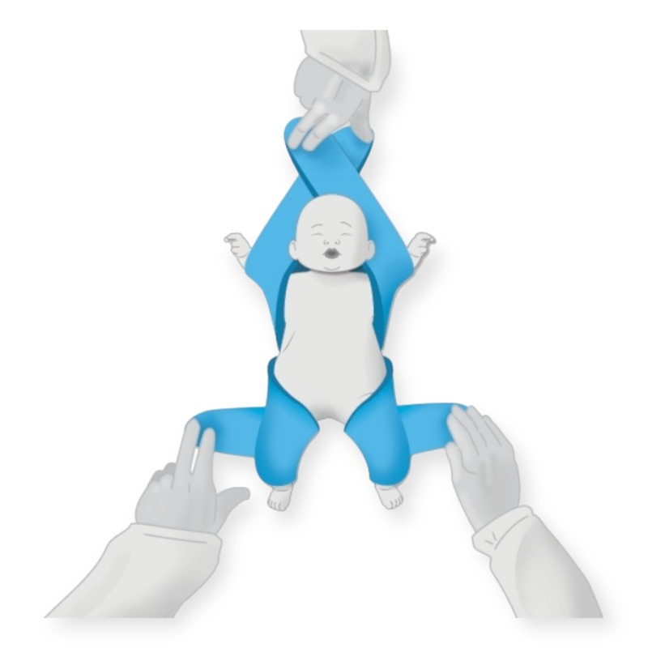

Radiology
Positioning children for brief imaging examinations was the starting point for the invention.
Explore the clinical backgroundDURABLE. REUSABLE. CHILD-FOCUSED.
Brief procedures can be a big moment for a small child. The Pediatric Position Holder is designed to support positioning while giving clinicians access to the area they need to treat.
Developed for brief medical procedures.
Now prompting conversations with ground and air medical transport teams.

01 A focus on the child
02 Access for the clinician
03 Redesigned for reuse
THE DESIGN
Positioning should serve the procedure and the patient. The holder’s design brings support and clinical access together.
The earlier design shown here supports the head and torso together. Ask the inventors how this feature carries forward in the reusable version.
The earlier design illustrates selective positioning of the arms and legs while leaving the chest and abdomen visible. Ask the team how the current design accommodates your procedure.
The redesign is durable and reusable. Contact the inventors for current product details and the cleaning and reuse instructions that apply to this version.
For use by healthcare professionals with continuous patient supervision during brief procedures.
CARE SETTINGS
Explore the clinical contexts behind the design and the conversations shaping what comes next.
Positioning children for brief imaging examinations was the starting point for the invention.
Explore the clinical backgroundLaceration repair, IV access, and other brief procedures raise the same practical question: how do we help a child hold still?
Discuss a procedureTransport professionals have expressed interest in the design. We welcome discussions about their positioning needs.
Potential application; transport suitability requires evaluation.
Share your team's needsBORN FROM CLINICAL EXPERIENCE
Help clinicians care for children who need help staying still.
Pediatric radiologist Frank Louis Quattromani, M.D., and co-inventor and product designer Patricia Rae Quattromani developed the Pediatric Position Holder around that need.
Their work brings a clinician’s perspective and a designer’s attention to the experience of the child.
Talk with the inventorsA CLOSER LOOK
Explore the redesign, clinical context,
and potential applications.
The current redesign is durable and reusable. The illustration on this concept page shows an earlier design; ask the inventors for current images, specifications, and availability.
The holder is designed to support positioning. It does not replace a clinician’s assessment, communication with the child and family, or appropriate comfort and coping measures.
Ambulance and helicopter medical transport professionals have expressed interest. That interest is a starting point for evaluation, rather than confirmation of suitability for use in transit.
The invention grew out of pediatric radiology practice. Contact the team to discuss the development history, supporting material, and current intended use.
LET’S TALK ABOUT YOUR SETTING
Speak with the team about the reusable design,
current product details, or a potential application.